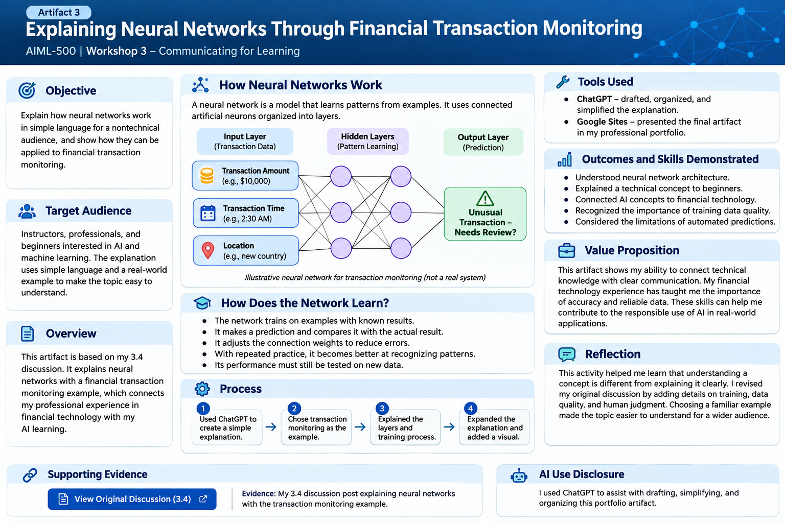

Artifact 3: Explaining Neural Networks Through Financial Transaction Monitoring
View the Original Artifact ReportCourse: AIML-500 – Machine Learning Fundamentals
Based on: Assignment 3.4 – Communicating for Learning
Skills Demonstrated: Deep learning fundamentals, technical communication, AI literacy, data reliability and responsible AI use.
Objective
My objective was to explain how neural networks work in simple language that people without a technical background could understand.
I wanted to show how neural networks process information, recognize patterns, and improve through training.
This artifact is designed for instructors, professionals, and beginners interested in artificial intelligence and machine learning.
I focused on explaining neural networks in simple language without requiring technical knowledge. I used financial transaction monitoring as a practical example to show how neural networks process information and recognize patterns.
By combining everyday explanations with a real-world financial example, I wanted to make the topic easier to understand for both technical and nontechnical audiences.
Overview: What Is This Artifact?
This artifact is based on my “Communicating for Learning” discussion.
I used a financial transaction monitoring example to explain neural networks. This example connects my professional experience in financial technology with my growing knowledge of artificial intelligence.
A neural network is a mathematical model that learns patterns from examples. It uses connected artificial neurons organized into layers.

How Neural Networks Work
Imagine a bank using a neural network to identify unusual transactions that may require further investigation.
The network processes information through three main types of layers:
- Input Layer: The input layer receives transaction information, such as the amount, time, and location.
- Hidden Layers: The hidden layers combine and analyze the information. Connections have numerical weights that help determine the importance of different patterns.
- Output Layer: The output layer produces a prediction, such as whether a transaction appears unusual and needs further review.
This is an illustrative example of how a neural network could support transaction monitoring, not a functioning fraud detection system.
How Does the Network Learn?
I compare neural network training to a student learning through practice.
First, the network receives examples with known answers. It makes predictions and compares them with the actual results.
During training, it adjusts its connection weights to reduce prediction errors.
With repeated practice, the network can become better at recognizing patterns. However, its performance on new data must still be tested.
Process
I first used ChatGPT to help create a simple explanation of neural networks.
I selected financial transaction monitoring as the example because it relates to my professional background.
I organized the explanation into short sections covering the layers, training process, and limitations.
After reviewing the shorter draft, I expanded it to explain how neural networks learn and why training data quality matters.
I also considered how to make the content more suitable for beginners through clear language, step-by-step explanations, and a visual diagram.
Tools Used
- ChatGPT: Organize and simplify the explanation.
- GitHub Pages: Used to present the revised artifact in my professional portfolio.
Outcomes and Skills Demonstrated
This assignment helped me strengthen several skills:
- Understanding neural network architecture.
- Explaining technical concepts to beginners.
- Connecting AI concepts to financial technology.
- Recognizing the importance of training data quality.
- Considering the limitations of automated predictions.
Value Proposition
This artifact demonstrates my ability to connect technical knowledge with effective communication.
My professional experience in financial technology has taught me the importance of accuracy, reliability, and clear communication.
As I continue developing my AI and machine learning knowledge, I want to apply these skills to help teams understand complex technologies and make informed decisions.
Reflection
This activity helped me understand that knowing a technical concept is different from explaining it clearly.
I learned to simplify neural networks without removing important information about how they work.
I also recognized the importance of choosing examples that are familiar to the audience. Financial transaction monitoring provided a practical way to explain neural network layers and training.
For my portfolio, I reorganized and expanded my original discussion to make it more useful for instructors and professionals interested in AI.
The experience reinforced the importance of communication when introducing new technologies.
Supporting Evidence
Original coursework: Assignment 3.4 – Communicating for Learning
Evidence: Initial discussion post explaining neural networks.
View the Original Artifact ReportAI Use Disclosure: ChatGPT was used for final editing.